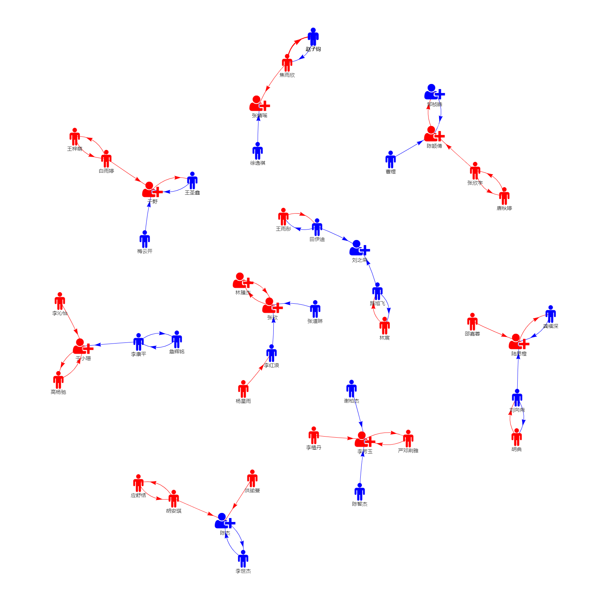

小组研究项目说明
1. 小组成员
1.1 设计目标
- 每个小组 ~ 4 名同学
- 主要考虑小组成员构成的多样性（如男女搭配、专业搭配）
1.2 分组流程
本学期最终选课名单上共有 44 位同学，其中：
- 财务学系 & 女生：17 位
- 财务学系 & 男生：16 位
- 非财务学系 & 女生：8 位
- 非财务学系 & 男生：3位
本次小组分组采用半随机分组，具体步骤如下：
- 由同学们自行组成 2 人“小小组”并于 11月2日24:00前 通过 {{坚果云}} 提交绑定信息给老师（当然也可选择不绑定，为“自由人”）
- 由老师在 步骤1 的基础上考虑小组成员构成的多样性采用“手工随机搭配”方式组合预绑定的“小小组”和“自由人”
1.3 分组结果
基于上述步骤最终得到 9 个小组（其中 8 个小组由 5 位同学组成，1 个小组由 4 位同学组成），结果如 图 1 所示：

2. 任务说明
2.1 备选研究项目
各小组通过小组讨论在如下备选研究项目中进行选择并形成初步研究思路与计划（具体选题不受限制，但希望各小组不要一窝蜂选择其中一个或某几个选题）：
- 投资组合（天真）分散化
- 周日效应（Day of the week effect）
- 股价过度反应
- cntrade.ado -> R包 & App
- 金融工程 App
- 指数基金定投策略 App
- 基于技术指标的量化投资策略
- 基本面量化投资策略
- 自选题目：经验实证研究（核心期刊、课程论文等）
- 自选题目：网络数据抓取与分析等（狗熊会、Stata中文社区等公号）
2.2 小组最终选题
根据各小组于 11月16日 反馈的信息，最终小组选题（及小组相关信息）如 表 1 所示【待补充】：
| 分组 | 小组名 | 组长 | 选题 | 1 | 2 | 3 | 4 | 5 |
|---|---|---|---|---|---|---|---|---|
| 1 | NA | NA | NA | 焦雨欣 | 徐逸祺 | 张婧瑶 | 赵子钧 | |
| 2 | NA | NA | NA | 曹煜 | 陈颖倩 | 唐秋婷 | 张欣宇 | 邹桢皓 |
| 3 | NA | NA | NA | 白雨婷 | 梅云开 | 王圣鑫 | 王梓萌 | 于野 |
| 4 | NA | NA | NA | 林宸 | 刘之荣 | 路旭飞 | 田伊迪 | 王雨彤 |
| 5 | NA | NA | NA | 李红浪 | 林臻杰 | 杨星雨 | 张道琳 | 张欣 |
| 6 | NA | NA | NA | 高杨驰 | 李康平 | 李沁怡 | 于小珊 | 詹辉铭 |
| 7 | NA | NA | NA | 龚福深 | 胡典 | 刘向尧 | 陆思橙 | 邵嘉蓉 |
| 8 | NA | NA | NA | 陈智杰 | 李芳玉 | 李植丹 | 谢柏杰 | 严邓荆雅 |
| 9 | NA | NA | NA | 陈杰 | 洪瑜蔓 | 胡安琪 | 李世杰 | 应舒恬 |
3. 时间安排
🕐 老师说明小组研究项目的构想、选题、要求和时间安排等方面的信息，并采用 “手工随机搭配” 方式完成小组成员分配
🕑 各组长于 11月16日晚24:00前 提交以下信息至 {{坚果云}}
小组名、组长姓名
小组选题与初步思路
小组成员照（标注姓名）电子版一份
🕒 小组制定研究计划，分工协作，积极展开项目研究
🕓 各小组于 12月2日 上台简要报告研究进展
🕔 各小组于 12月16日前 完成项目研究，提交研究成果（如研究报告、展示文档、App等）
🕕 老师选择部分小组（初定 5 个小组）于 12月30日 上台展示 / 分享小组研究项目
4. 报告展示
【待补充和进一步明确 ……】
5. 作业评分
为了让每位同学最终得到的小组研究项目成绩能更好体现小组研究项目的完成质量及其对小组研究项目的态度、投入与贡献，同时尽可能避免小组作业中可能出现的“搭便车”现象，在小组作业成绩评定方面引入小组成员互评机制。
在完成小组研究项目之后，老师会发放问卷，要求同学们对自身及小组其他成员在小组研究项目中的表现进行评分。最终老师会在小组项目得分的基础上根据小组作业完成情况和成员互评结果进行增/减分处理，从而得到该同学小组作业的最终得分。示例说明如下：
假设某个小组由 A、B、C、D、E 五位成员组成，小组项目得分为88分（即基准分），小组成员互评情况（+ 表示一次正面评价，- 表示一次负面评价）、加 / 减分及最终得分如 表 2 所示：
| 基准分 | 加/减分 | 最终得分 | ||||||
| A | + |
+ |
- |
88 | +0 |
90 | ||
| B | + |
+ |
+ |
+ |
+ |
88 | +12 |
100 |
| C | + |
- |
88 | +0 |
88 | |||
| D | - |
- |
- |
- |
- |
88 | -20 |
68 |
| E | + |
+ |
88 | +4 |
92 |
注1：在确定 表 2 中的加/减分项时，老师保留根据（全班）小组作业完成情况和成员互评结果确定每个小组中每一位同学的每一个 + / - 的具体加 / 减分值的权力。